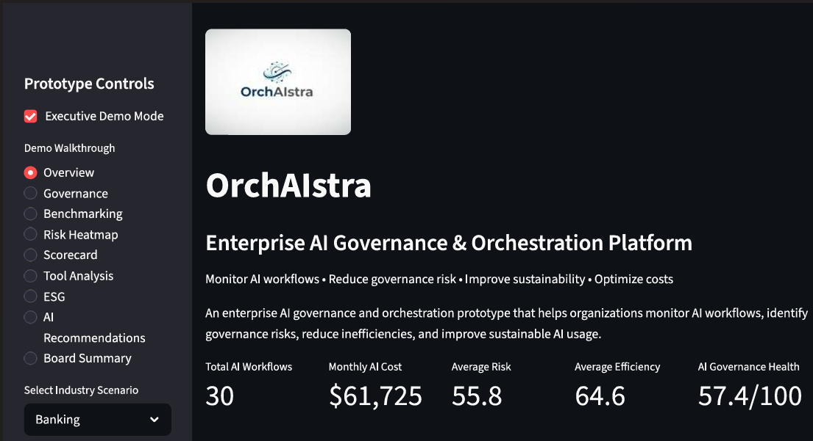
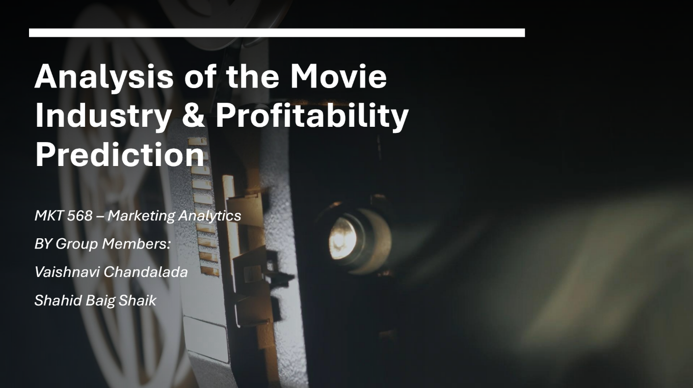
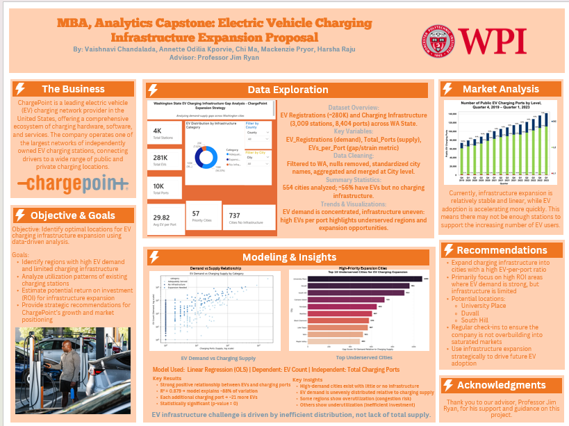
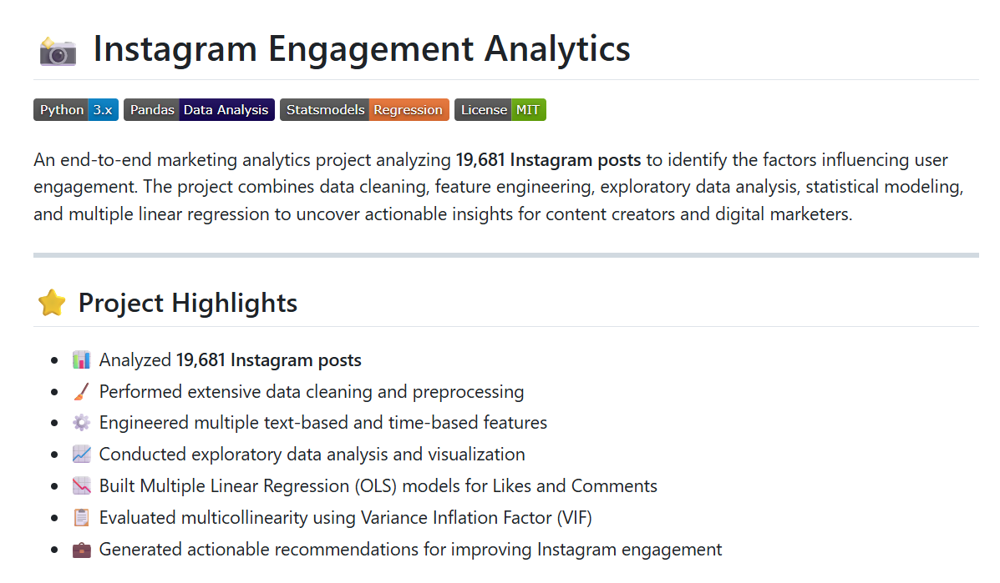
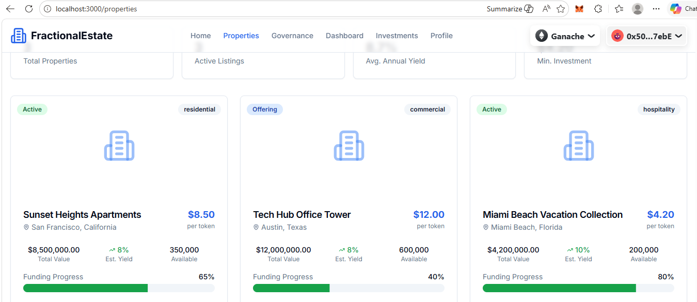

01
Programming & Analytics
Python, SQL, Pandas, Jupyter Notebook, statistical analysis, data cleaning, and feature engineering.
HI, I'M
Vaishnavi Chandalada
MBA Candidate · Business Analytics · Worcester Polytechnic Institute
I design executive dashboards, predictive analytics solutions, and AI-powered applications that help organizations turn complex data into practical, strategic insights.
ABOUT ME
My work sits at the intersection of business strategy, analytics, and technology. I enjoy developing solutions that make complex information easier for decision-makers to understand and act upon.
Through projects in AI governance, business intelligence, marketing analytics, infrastructure planning, and blockchain, I have gained experience translating technical analysis into practical business recommendations.
TECHNICAL SKILLS
Python, SQL, Pandas, Jupyter Notebook, statistical analysis, data cleaning, and feature engineering.
Power BI, Excel, Power Query, KPI reporting, executive dashboards, and data storytelling.
Streamlit, Plotly, interactive analytics applications, workflow tools, and automated reporting.
Regression, decision trees, neural networks, model evaluation, interpretation, and business recommendations.
SELECTED WORK

Enterprise AI Governance & Business Analytics Platform
An interactive platform for evaluating AI workflows across risk, governance, efficiency, compliance, data sensitivity, cost, and sustainability.

Profitability Analysis & Prediction
Analyzed more than 5,400 movies to identify profitability drivers and built regression, decision tree, and neural network models to predict movie profits.

Washington State Demand & Capacity Analysis
Evaluated EV registrations, charging capacity, geographic gaps, and high-strain cities to support data-driven infrastructure investment decisions.

Engagement Drivers & Regression Modeling
Analyzed 19,681 Instagram posts and used OLS regression and VIF diagnostics to identify the creator, caption, timing, and posting factors influencing engagement.

Blockchain Real Estate Marketplace
Developed a marketplace demonstrating fractional real-estate ownership, property listings, ownership management, and smart-contract transaction workflows.
EXPERIENCE & TIMELINE
Keyword research, on-page SEO, backlinks, Google Analytics, and Search Console.
E-commerce and Digital Marketing; served as Class Representative.
Business intelligence, financial analytics, AI, strategy, and blockchain coursework.
Received project funding support for OrchAIstra.
Business Analyst, Data Analyst, BI Analyst, Analytics Consulting, and AI Governance.
CERTIFICATIONS
LinkedIn Learning
Coursera
Coursera
Coursera
Coursera
Coursera
GITHUB
My repositories include notebooks, datasets, model results, visualizations, and project documentation.
LET’S CONNECT
I am open to opportunities in business analytics, data analytics, business intelligence, and analytics consulting.